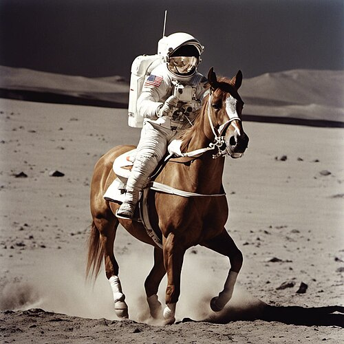

<!DOCTYPE html>
<html lang="en">
<head>
<meta charset="utf-8">
<meta name="viewport" content="width=device-width, initial-scale=1">
<title>W01 · Deck 02 · Why Diffusion Models? · ID-5-02 (TO) · IIT Jammu</title>
<script crossorigin src="https://unpkg.com/react@18/umd/react.production.min.js"></script>
<script crossorigin src="https://unpkg.com/react-dom@18/umd/react-dom.production.min.js"></script>
<link href="https://fonts.googleapis.com/css2?family=Roboto:wght@300;400;500;700&family=Roboto+Slab:wght@400;600;700&family=Roboto+Mono&display=swap" rel="stylesheet">
<style>
  :root{
    --blue:#003f87; --blue-dark:#002d63; --blue-mid:#0056b8; --blue-sky:#4da3ff; --blue-pale:#eaf3ff;
    --ink:#22262a; --star:#f4b400;
  }
  *{box-sizing:border-box}
  html,body{margin:0;height:100%;background:#0b1e3a;font-family:Roboto,system-ui,sans-serif;color:var(--ink)}
  #root{height:100%}
  .deck{height:100%;display:flex;flex-direction:column;overflow:hidden}
  .slide{flex:1;display:flex;flex-direction:column;justify-content:center;padding:5vh 8vw;
         background:#fff;overflow:auto}
  .slide.title{background:linear-gradient(160deg,var(--blue-dark) 0%,var(--blue) 70%,var(--blue-mid) 100%);color:#fff}
  .slide.accent{background:linear-gradient(160deg,#f6faff,var(--blue-pale))}
  h1{font-family:"Roboto Slab",serif;font-size:clamp(1.8rem,4.5vw,3.2rem);margin:.2em 0;line-height:1.15}
  h2{font-family:"Roboto Slab",serif;font-size:clamp(1.4rem,3vw,2.2rem);color:var(--blue-dark);margin:.2em 0 .6em;
     border-bottom:3px solid var(--blue-pale);padding-bottom:.25em}
  .title h2{color:#cfe3ff;border:none;font-weight:400;font-size:clamp(1rem,2vw,1.5rem)}
  .kicker{font-size:clamp(.8rem,1.4vw,1rem);letter-spacing:.14em;text-transform:uppercase;color:var(--blue-sky)}
  p,li{font-size:clamp(1rem,1.9vw,1.35rem);line-height:1.55}
  li{margin:.35em 0}
  .big{font-size:clamp(1.3rem,2.6vw,1.9rem);font-weight:500;color:var(--blue-dark)}
  table{border-collapse:collapse;font-size:clamp(.95rem,1.7vw,1.25rem);margin:.4em 0;width:100%}
  th{background:var(--blue);color:#fff;text-align:left}
  th,td{border:1px solid #cfdcec;padding:.35em .7em}
  tr:nth-child(even) td{background:#f4f8fd}
  code,.mono{font-family:"Roboto Mono",monospace;color:var(--blue-mid)}
  .cols{display:flex;gap:4vw;flex-wrap:wrap}
  .cols>div{flex:1;min-width:260px}
  .note{background:var(--blue-pale);border-left:5px solid var(--blue);padding:.5em 1em;border-radius:0 8px 8px 0;
        font-size:clamp(.95rem,1.7vw,1.2rem)}
  .quote{font-family:"Roboto Slab",serif;font-size:clamp(1.4rem,3.4vw,2.4rem);color:var(--blue-dark);
         text-align:center;line-height:1.4;margin:auto 0}
  .quote small{display:block;font-family:Roboto,sans-serif;font-size:.55em;color:#667;margin-top:1em}
  /* chrome */
  .bar{height:5px;background:#12305c}
  .bar>div{height:100%;background:var(--blue-sky);transition:width .25s}
  .foot{display:flex;justify-content:space-between;align-items:center;background:#0b1e3a;color:#8fb4e8;
        font-size:.75rem;padding:6px 14px;font-family:"Roboto Mono",monospace}
  .foot b{color:#cfe3ff;font-weight:500}
  .navhint{opacity:.7}
  .clickzone{position:fixed;top:0;bottom:30px;width:18vw;cursor:pointer;z-index:5}
</style>
</head>
<body>
<div id="root"></div>
<script>
"use strict";
const e = React.createElement;
const F = React.Fragment;

/* ---------- content ---------- */
const li = (...items)=> e("ul",null, ...items.map(t=> e("li",{dangerouslySetInnerHTML:{__html:t}})));
const html = (tag,s)=> e(tag,{dangerouslySetInnerHTML:{__html:s}});
const table = (head,rows)=> e("table",null,
  e("thead",null, e("tr",null, ...head.map(hh=>e("th",null,hh)))),
  e("tbody",null, ...rows.map(r=> e("tr",null, ...r.map(c=> html("td",c))))));

const SLIDES = [

{cls:"title", body:()=> e(F,null,
  e("div",{className:"kicker"},"ID-5-02 (TO) · Monsoon 2026 · IIT Jammu"),
  e("h1",null,"Why Diffusion Models?"),
  e("h2",null,"W01 · Part 2 — the success story, and what diffusion actually is"),
  e("p",{style:{marginTop:"2em",color:"#cfe3ff"}},"Uma Satyaranjan · Soma S Dhavala"),
  e("p",{style:{color:"#8fb4e8",fontSize:"1rem"}},"→ arrow keys or click the right edge to advance"))},

{title:"The success story", body:()=> e("div",{className:"cols"},
  e("div",null,
    html("p",'Diffusion models made <b>photorealistic image generation from text</b> a consumer product:'),
    li('<b>DALL·E 2</b> (OpenAI, 2022) — the famous <i>“an astronaut riding a horse”</i>',
       '<b>Stable Diffusion</b> (2022) — open-source, latent diffusion; ran on a gaming GPU',
       '<b>Imagen</b> (Google), <b>Midjourney</b> — an award-winning art scene almost overnight'),
    html("p",'<span class="big">Type a sentence → get an image that never existed.</span>')),
  e("div",null,
    html("div",''),
    html("p",'<span style="font-size:.75em;color:#667">“An astronaut riding a horse” — Stable Diffusion XL (Wikimedia Commons)</span>')))},

{title:"Far beyond images", body:()=> e(F,null,
  li('<b>Video</b> — Sora (OpenAI), Veo (Google): text → coherent video clips',
     '<b>Audio &amp; speech</b> — music and voice synthesis',
     '<b>Science</b> — protein <i>design</i> (RFdiffusion); <b>AlphaFold 3</b>’s structure module is a diffusion model; weather forecasting (GenCast)',
     '<b>…and now language</b> — diffusion LLMs denoise whole passages <i>in parallel</i> instead of one token at a time: Mercury, Gemini Diffusion, LLaDA (2025)'),
  html("div",'<div class="note">One idea, moving discipline to discipline — usually the signature of good mathematics.</div>'))},

{title:"The field agrees", body:()=> e(F,null,
  li('<b>ICLR 2021 Outstanding Paper</b> — <i>Score-Based Generative Modeling through SDEs</i> (Song et al.): the framework we build to in Modules 5–6',
     '<b>ICML 2024 Best Paper</b> — <i>Discrete Diffusion Modeling…</i> (Lou, Meng, Ermon): diffusion for text',
     'Top-venue best-paper awards keep landing on diffusion papers — this is the field’s frontier'),
  html("div",'<div class="note"><b>This course:</b> the mathematics behind that success, in a deliberately simpler setting — low dimensions, Gaussians, formulas you can derive by hand. By the end, you read those papers.</div>'))},

{title:"So what is diffusion?", body:()=> e(F,null,
  html("p",'<span class="big">Forget AI for ten minutes. Put a drop of ink in still water. Watch.</span>'),
  li('It spreads. Always. Nobody stirs, nothing pushes.',
     '<b>Pure randomness moves matter from crowded to empty</b> — structure dissolves into uniformity.',
     'That spreading is diffusion. Its mathematics is 200 years old.'))},

{title:"Two centuries before AI/ML", body:()=> e(F,null,
  table(["Year","Who","What diffused"],[
    ["1822","Fourier","<b>Heat</b> — the heat equation"],
    ["1827","Brown","<b>Pollen grains</b> jiggling in water"],
    ["1855","Fick","<b>Chemicals</b> — concentration gradients"],
    ["1900","Bachelier","<b>Stock prices</b> — five years <i>before</i> Einstein"],
    ["1905","Einstein","Brownian motion ⇒ <b>atoms are real</b> (Perrin’s Nobel)"],
    ["1931","Kolmogorov","The <b>probability theory</b> of diffusion processes"],
    ["1962","Rogers","<b>Ideas</b> — “diffusion of innovations”"],
    ["1973","Black–Scholes–Merton","<b>Option prices</b> — finance runs on diffusions"]]),
  html("p",'Same equations every time. You will recognize all of them in this course.'))},

{title:"Then it made it big in AI", body:()=> e(F,null,
  table(["Year","Step"],[
    ["2015","Sohl-Dickstein et al. — borrow <i>non-equilibrium thermodynamics</i> for generative modeling"],
    ["2019","Song &amp; Ermon — generate by following the <b>score</b>"],
    ["2020","Ho et al. — <b>DDPM</b>: diffusion matches GANs on images"],
    ["2021","Song et al. — one <b>SDE</b> unifies everything"],
    ["2022","DALL·E 2, Imagen, Stable Diffusion — the public moment"],
    ["2024–","Video, proteins, weather, <b>language</b>"]]),
  html("div",'<div class="note">The one twist AI added to 200 years of physics: <b>run the diffusion backwards.</b></div>'))},

{cls:"accent", body:()=> e(F,null,
  e("div",{className:"quote"},"We will learn to undo what physics does for free — mathematics that turns noise back into data.",
    e("small",null,"And we start with the smallest example that contains the whole idea: two data points. → Part 3")))},

];

/* ---------- deck engine ---------- */
function Deck(){
  const [i,setI] = React.useState(()=>{
    const n=parseInt(location.hash.slice(1)); return Number.isInteger(n)&&n>=0&&n<SLIDES.length? n:0; });
  const go = React.useCallback(d=>{
    setI(cur=>{ const n=Math.min(SLIDES.length-1, Math.max(0, cur+d)); location.hash="#"+n; return n; });
  },[]);
  React.useEffect(()=>{
    const k=ev=>{ if(["ArrowRight","PageDown"," "].includes(ev.key)) go(1);
                  else if(["ArrowLeft","PageUp"].includes(ev.key)) go(-1);
                  else if(ev.key==="Home"){ setI(0); location.hash="#0"; } };
    window.addEventListener("keydown",k); return ()=>window.removeEventListener("keydown",k);
  },[go]);
  const s=SLIDES[i];
  return e("div",{className:"deck"},
    e("div",{className:"clickzone",style:{left:0},onClick:()=>go(-1)}),
    e("div",{className:"clickzone",style:{right:0},onClick:()=>go(1)}),
    e("div",{className:"slide "+(s.cls||"")},
      s.title? e("h2",null,s.title):null,
      s.body()),
    e("div",{className:"bar"}, e("div",{style:{width:((i+1)/SLIDES.length*100)+"%"}})),
    e("div",{className:"foot"},
      e("span",null, e("b",null,"ID-5-02 (TO)")," · Deck 02 · Why Diffusion Models?"),
      e("span",{className:"navhint"},"← → to navigate"),
      e("span",null, (i+1)+" / "+SLIDES.length)));
}
ReactDOM.createRoot(document.getElementById("root")).render(e(Deck));
</script>
</body>
</html>
